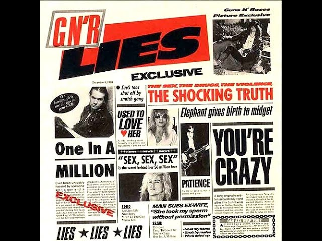
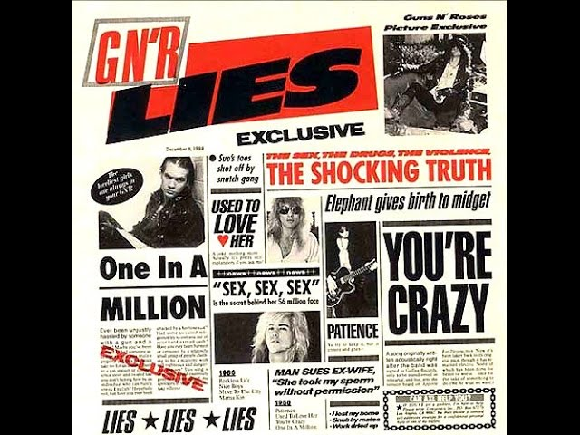

|
Guns N' Roses (גאנז נ' רוזס, ידועה גם בשם "רובים ושושנים") היא להקת הארד רוק והבי מטאל אמריקאית אשר נוסדה במקור בלוס אנג'לס בשנת 1985 ופועלת מאז. הלהקה הוציאה עד היום שישה אלבומי אולפן שלושה מיני-אלבומים, אלבום כפול של הופעה חיה, שני אלבומי אוסף, שלושה תקליטורי DVD ושני סינגלים.
Appetite for Destruction, אלבום הבכורה של הלהקה אשר ראה אור ב-1987, העניק להם תדמית פרועה בשל אווירת ההרס העצמי שבו וזכה להצלחה עצומה הן בביקורות והן במכירות, ואף הפך לאלבום הבכורה הנמכר ביותר בכל הזמנים. האלבומים Use Your Illusion I ו-Use Your Illusion II, אשר ראו אור ב-1991, המשיכו את רצף ההצלחה של הלהקה ובנוסף גם הציגו תפנית מסוימת במוזיקה שלה מפני ששילבו סגנונות אחרים חוץ מהארד רוק - וכך בעצם הכילו שירים פחות כבדים אשר לא אפיינו את אלבומה הראשון.
Guns N' Roses דורגה במקום ה-92 בקטגוריית "האמנים הגדולים בכל הזמנים" של כתב העת "רולינג סטון".
חברי הלהקה: אקסל רוז - סולן/זמר דיזי ריד - קלידן ריצ'רד פורטוס - גיטרה פרנק פרר - תופים סלאש - גיטרה דאף מק'אגן - גיטרה בס |
|
Guns
And
Roses
|
 
